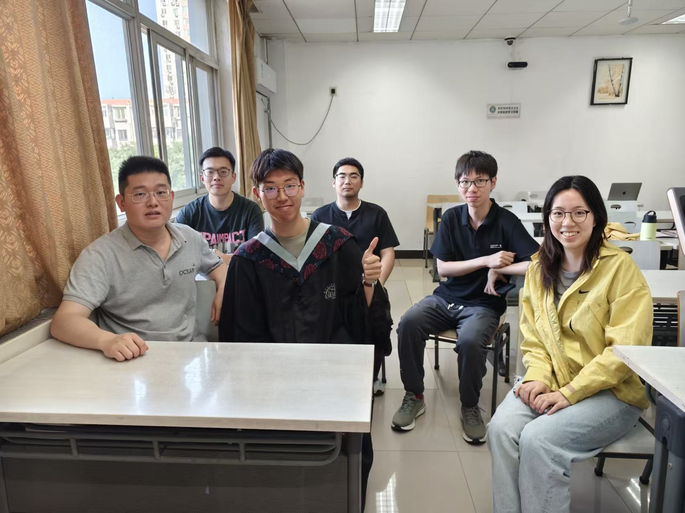
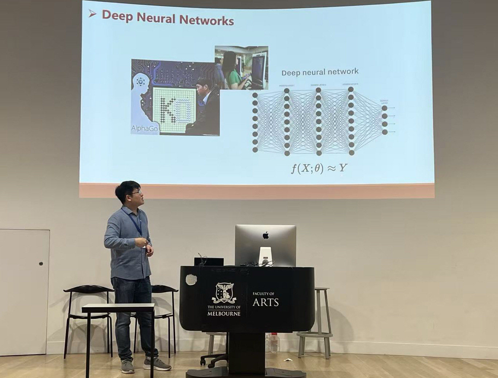

2026-6 贸大毕业季，北京 Graduation of UIBE, Beijing
2026-5 组会，北京 Seminar in UIBE, Beijing

2025-7 参加2025联合会议，杭州 Talk on JCSDS, Hangzhou
2025-6 贸大毕业季，北京 Graduation of UIBE, Beijing
2024-7 参加2024联合会议，昆明 Talk on JCSDS, Kunming
2024-6 参加IMS会议，墨尔本 Talk on IMS, Melbourne

Plain Academic